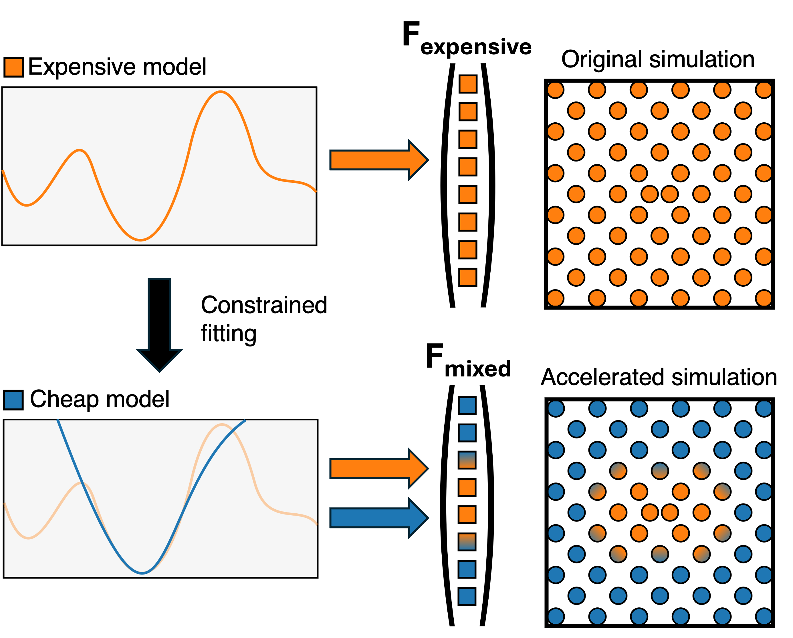

ML-MIX documentation
Welcome to the documentation for ML-MIX, a LAMMPS plugin for performing efficient spatial mixing of different pair_styles!
This documentation covers:
Setup and installation of the LAMMPS plugin and Python packages required for running the provided case studies.
An overview of the plugin.
Simple examples demonstrating how to use the plugin.
Detailed LAMMPS-style documentation on the commands provided by the plugin.
Documentation on the constrained fitting of small, fast linear ACE and UF3 potentials.